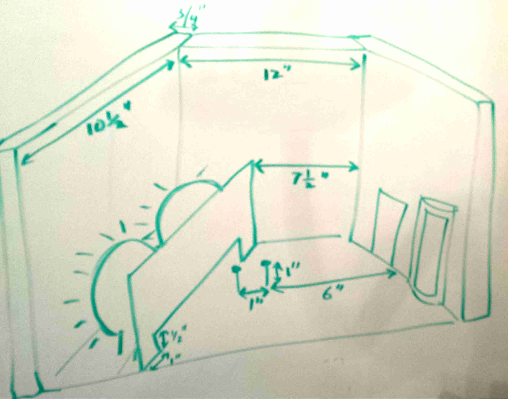
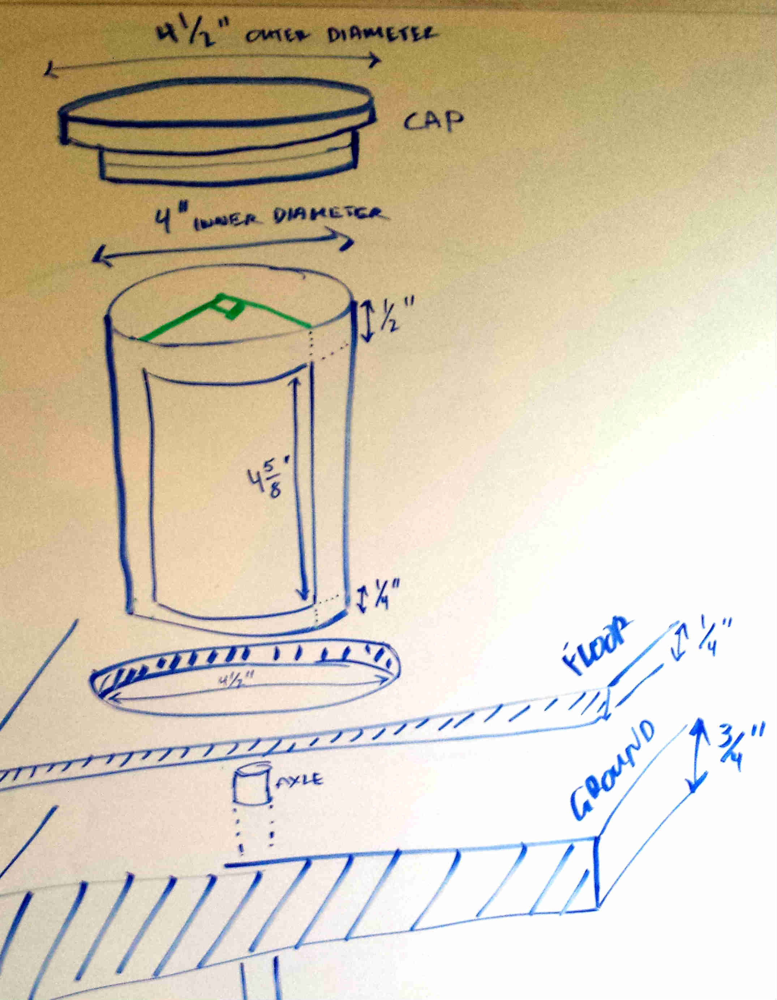

This experiment intends to answer, in a manner accessible to average door users, whether their choices of a revolving door versus regular might justifiably be thought to reduce energy consumption.
The experiment uses a heated tiny building that automatically opens its doors in proportion to a rate of traffic. By measuring the drop in temperature caused by different numbers of simulated people arriving, we should see whether, all else equal, the revolving door expends less heat.
Model construction and programming is still in progress, more details to follow
You can run an (incomplete) in-browser demo at model.html
This model is approximately one foot on each side, built mostly from medium-density fiberboard, 3/4-inch for walls and 1/4-inch for a revolving door and a swinging door, placed approximately equidistant from the building center.
Each wall is a 12 by 12 inch square, making the building slightly oblong. Inside, two sensors lie six and seven inches from the interior front wall.
Two light bulbs provide heat for the building; they remain on throughout the experiment so a constant amount of energy flows into the model. Between the heaters and the sensors, a quarter-inch fiberboard barrier blocks direct incandescent heat, but allows air flow through half-inch gap at the bottom.
For the revolving door enclosure, the model uses 4-inch PVC pipe. Since the reference full-sized door wings were 3 by 7 feet each, this dictates 1/18 scale, making each wing 2 inches by 4 and 5/8 inches.
On each side of the enclosure, a 90-degree opening allows virtual traffic through the door. The enclosure is slightly taller for stability, leaving a half-inch lip on the top and a quarter-inch lip on the bottom.
A plug made from three layers of quarter-inch fiberboard covers the top of the enclosure. The lower to layers fit into the enclosure while the half-inch wider top layer prevents the plug from slipping too far in.
Another plug, this time one layer, fits into the bottom of the door enclosure, and the enclosure, in turn, fits into a circular opening in the quarter-inch fiberboard that represents the building's floor, which in turn rests on the 3/4-inch fiberboard ground. A hole through these lower pieces provides for the door's axle.
The model uses a four-winged revolving door, made by slotting two pieces of fiberboard together.
The slightly wider slot in the bottom of the door pieces allows the door to couple to its drive axle via a nylon spacer; the axle itself, a zinc rod, pressure-fits into the spacer and extends below the ground, where another nylon spacer couples it to the stepper motor.
Tolerances around the door are approximately 1/16 inch, due more to my carpentry skill than design. By fortuitous coincidence, this turns out to be approximately in scale with the gaps around the full-sized revolving door wings used as a reference.
To keep the centered, the door uses a 4d finish nail's tip as its top axle.
The swinging door is the same size as one wing of the revolving door, matching the swinging doors installed beside the revolving door in the real-world office building used as a reference.
A small notch at the bottom of the swinging door leaves room for the servo arm to glue to the swinging door, thus coupling directly to the servo.
{kind=link}
{kind=link}
{kind=link}
{kind=link}
{kind=link}
{kind=link}